芬妮 · 古怪神探
格雷森侦探事务所是整个联合城数一数二的私人侦探事务所，芬妮则是事务所的核心。她办理过无数非常级棘手的案件，而这些案件无一例外都得到了完美的解决。不光如此，她还是一位资深的法学博士，拥有联合城颁发的双证。
本回合停留后，额外触发1次事件。
芬妮触发事件后，获得3星币。
使用主动技能时，从2个随机事件中选择一个触发。
当芬妮在PVP或在PVE未潜能激发时，若芬妮使用技能后踩到事件地块，地块的全员事件会先触发，然后才是技能的事件。
基础资料
PVE 特性
- 达到1星时立刻获得10星币
- 初始星币+6
- 达到3星时攻击力+1、防御力+1、移动速度+1
默认
获取方式默认

羁绊皮肤
获取方式芬妮缔结契约后使用
清凉盛夏
获取方式购买通行证并且通行证等级达到40级
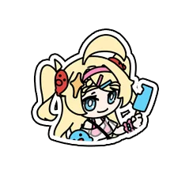
“这是她什么时候的照片啊？”恋拿着照片问道。 “我记得好像是…哦对了，几年前事务所的聚会吧。” “那天事务所老大为了让我们玩得尽兴，专门包下了黄金海岸的一片沙滩。”某个声音回答道，并接过照片看了起来。 “唉..真好啊，我也想去沙滩。”恋若有所思道。 “她那天因为穿这身泳衣被同事吐槽搭配太少女了。” “唉…我倒觉得蛮可爱的，还想看她穿一次呢。”恋回答道。 “老大坚信前辈并没有离开我们，肯定在某个地方拿着她心爱的放大镜在找寻线索呢。”
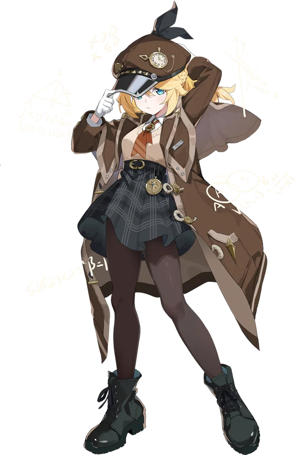
超然解析
获取方式在活动超级侦探超然解析中以300购入
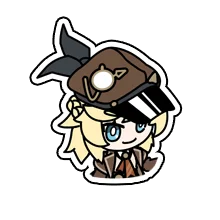
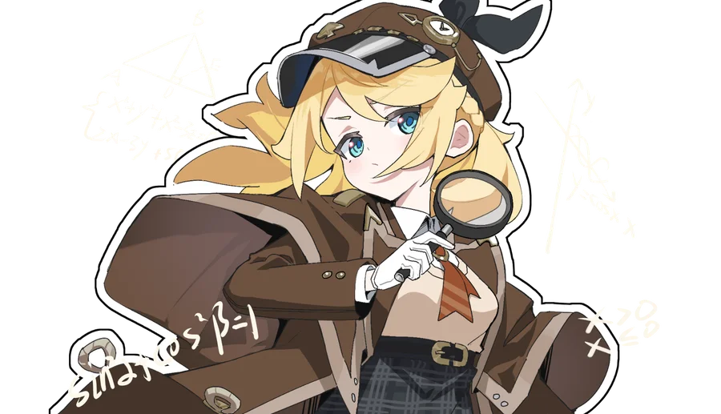
虽然整个世界当中存在诸多的魔法元素。但是能完美掌握的人少之又少。 在这个世界上，会激发出这些魔力的人才能完美的将这些魔法作用于现实世界当中。 其中芬妮克雷格就是解析魔法的佼佼者，她运用自身的魔力和经验，解决了很多棘手的案件，以至于很多人都不将她称为侦探，而是称为“超然解析的魔法师”。 至于这里面的学问，那你得去光礼大学学习整套课程才能知晓了。
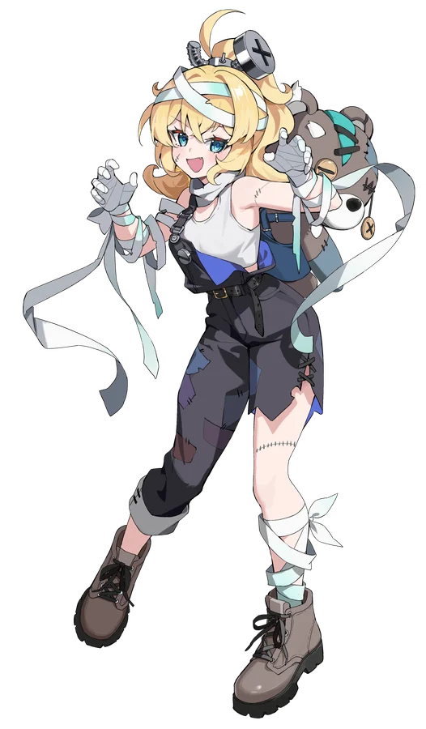
科学怪探
获取方式在活动魔怪舞会中抽奖或以666购入
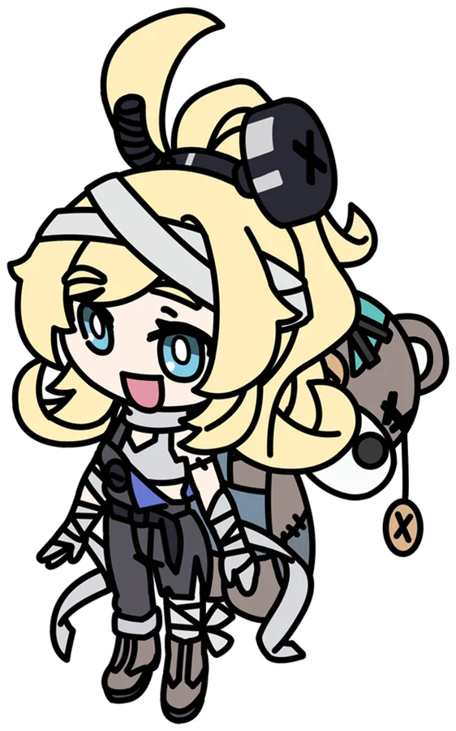
今年的御魂庆典，后街举办了盛大的“魔怪舞会”表演。 吃喝玩乐、游园表演一条龙，是一场大型的节日庆典活动。 当然，每年的御魂庆典都少不了化装舞会。 来自五湖四海的玩家不远万里来到联合城，只为参加这一年的盛大活动。在这一天，你穿得再怪也没关系，只要不违法，都可以在大街上自由地表演。芬妮每年都会穿着稀奇古怪的衣服来参加活动。据她自己说，她是个非常喜欢此类活动的人，不仅限于御魂庆典，只要是变装、化装舞会，她只要有空都会去参加。 她说，这源于从前办案时常常需要穿上案发现场相关人员的衣服，进行“换位思考”。渐渐地，她觉得穿着古怪衣服扮演角色是一件很好玩的事，这种爱好也从工作扩展到了生活中。 “当你设身处地地穿上这身衣服，变成这个角色的时候，思考也会随之发生变化。” 虽然不知道变成绷带僵尸到底有没有脑子思考，但总之她很开心。
悠闲假日
获取方式在商城中以333购入
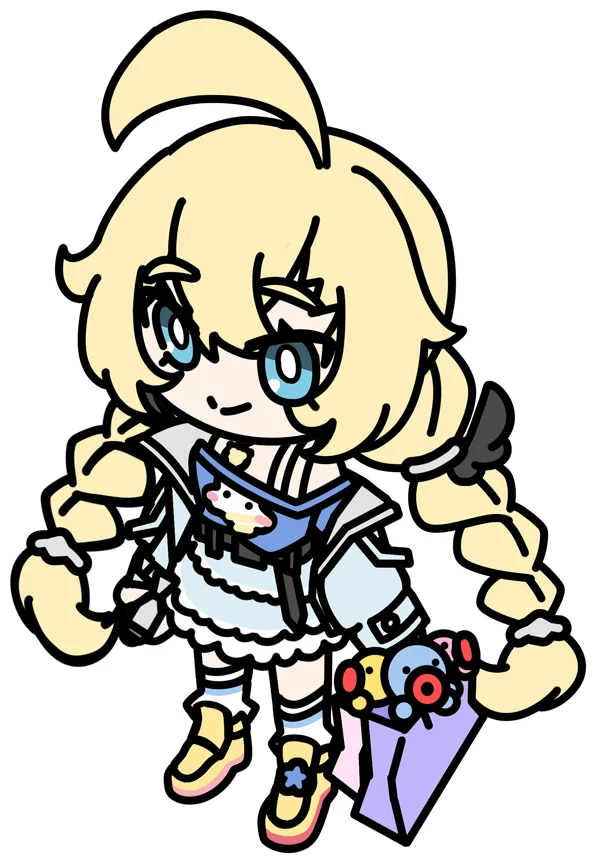
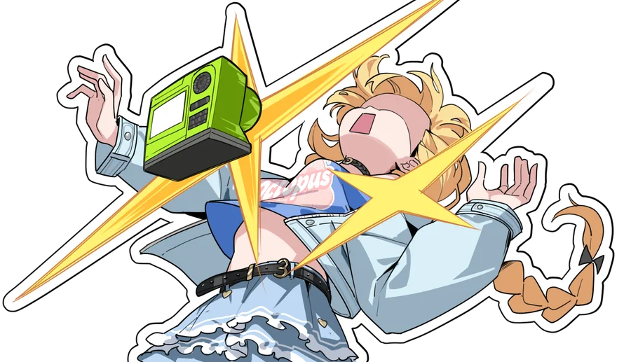
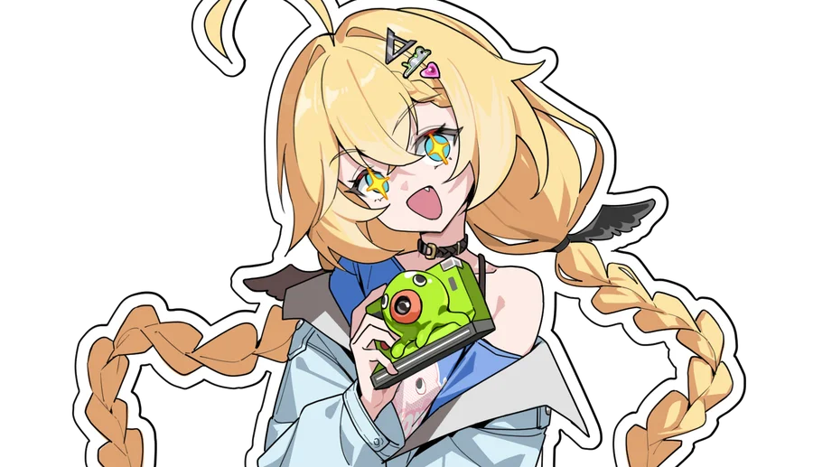
对于侦探而言，从不存在真正的周末或节假日休息。忙起来时，只要有案件就会忙个没完；没有案件时，又可能闲到无所事事。今天比较特殊，案件刚好结案，又是难得的假日，因此决定出去放松一下。穿上自己喜爱的休闲装，搭配可爱的装饰，开启一场只属于自己的悠闲周末。 先去到之前常去的网红打卡点，用相机好好拍几张照片，扩充自己的摄影相册。接着去游戏中心，享受抓娃娃机无限制的快乐，照着喜欢的娃娃疯狂抓取。玩累了，找个地方吃点甜点，想想就觉得很完美！ “晚饭吃什么呢？不过还早，要么看看有什么电影？看完再去吃也不迟？”这么想着，她掏出手机准备搜索最近上映的电影。 然后，某个人的电话恰好打了进来。
共 18 个表情，点击可放大。


头像5


名片12
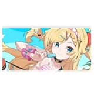
卡牌4

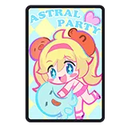
骰子2

主页背景1
人物传记
在“天王落”事件后失踪，录入的形象是很久之前的。
皮肤故事
清凉盛夏
“这是她什么时候的照片啊？”恋拿着照片问道。 “我记得好像是…哦对了，几年前事务所的聚会吧。” “那天事务所老大为了让我们玩得尽兴，专门包下了黄金海岸的一片沙滩。”某个声音回答道，并接过照片看了起来。 “唉..真好啊，我也想去沙滩。”恋若有所思道。 “她那天因为穿这身泳衣被同事吐槽搭配太少女了。” “唉…我倒觉得蛮可爱的，还想看她穿一次呢。”恋回答道。 “老大坚信前辈并没有离开我们，肯定在某个地方拿着她心爱的放大镜在找寻线索呢。”
超然解析
虽然整个世界当中存在诸多的魔法元素。但是能完美掌握的人少之又少。 在这个世界上，会激发出这些魔力的人才能完美的将这些魔法作用于现实世界当中。 其中芬妮克雷格就是解析魔法的佼佼者，她运用自身的魔力和经验，解决了很多棘手的案件，以至于很多人都不将她称为侦探，而是称为“超然解析的魔法师”。 至于这里面的学问，那你得去光礼大学学习整套课程才能知晓了。
科学怪探
今年的御魂庆典，后街举办了盛大的“魔怪舞会”表演。 吃喝玩乐、游园表演一条龙，是一场大型的节日庆典活动。 当然，每年的御魂庆典都少不了化装舞会。 来自五湖四海的玩家不远万里来到联合城，只为参加这一年的盛大活动。在这一天，你穿得再怪也没关系，只要不违法，都可以在大街上自由地表演。芬妮每年都会穿着稀奇古怪的衣服来参加活动。据她自己说，她是个非常喜欢此类活动的人，不仅限于御魂庆典，只要是变装、化装舞会，她只要有空都会去参加。 她说，这源于从前办案时常常需要穿上案发现场相关人员的衣服，进行“换位思考”。渐渐地，她觉得穿着古怪衣服扮演角色是一件很好玩的事，这种爱好也从工作扩展到了生活中。 “当你设身处地地穿上这身衣服，变成这个角色的时候，思考也会随之发生变化。” 虽然不知道变成绷带僵尸到底有没有脑子思考，但总之她很开心。
悠闲假日
对于侦探而言，从不存在真正的周末或节假日休息。忙起来时，只要有案件就会忙个没完；没有案件时，又可能闲到无所事事。今天比较特殊，案件刚好结案，又是难得的假日，因此决定出去放松一下。穿上自己喜爱的休闲装，搭配可爱的装饰，开启一场只属于自己的悠闲周末。 先去到之前常去的网红打卡点，用相机好好拍几张照片，扩充自己的摄影相册。接着去游戏中心，享受抓娃娃机无限制的快乐，照着喜欢的娃娃疯狂抓取。玩累了，找个地方吃点甜点，想想就觉得很完美！ “晚饭吃什么呢？不过还早，要么看看有什么电影？看完再去吃也不迟？”这么想着，她掏出手机准备搜索最近上映的电影。 然后，某个人的电话恰好打了进来。
画廊其他素材

共 21 条中文语音台词（日文台词在官方 wiki 的语音页）。
| 场景 | 台词 |
|---|---|
| 角色介绍 | 欸，什么什么，你找我要解决麻烦的事件吗？嘿，看我的吧！ |
| 角色选择 | 什么，有事件要解决？交给我吧！ |
| 角色入场 | 开始搜寻线索。 |
| 角色入场（邦妮在场时） | 这不是捣蛋鬼嘛。 |
| 使用技能 | 搜索，解析，确定！ |
| 使用卡牌 | 用这个就对啦。 / 这玩意感觉不错哦~ |
| 移动 | 继续前进！ / Go Go Go！ |
| 欢呼 | 嗯哼哼~ / 感觉不错！ |
| 负面事件 | 呜啊…… |
| 商店 | 购买些有用的家伙事儿。 |
| 事件 | 嗯？什么什么？ |
| 升级 | 果然还得是我呀！ |
| 受伤 | 好疼！ / 呃啊…… |
| 死亡 | 人家是无辜的！ |
| 骰点攻击 | 可别想逃跑哦？ / 可别让我逮到你哦！ |
| 骰点防御 | 动手可不好哦。 |
| 攻击 （除 羁绊皮肤、悠闲假日 外） | 嗨呀！ |
| 攻击胜利 | 真凶，缉拿归案！ |
| 奖励（未使用） | 欸——欸嘿。 |
| 胜利 | 顺利结案，好耶！ |
| 最大羁绊解锁 | 你果然发现了盲点，干得不错！ |